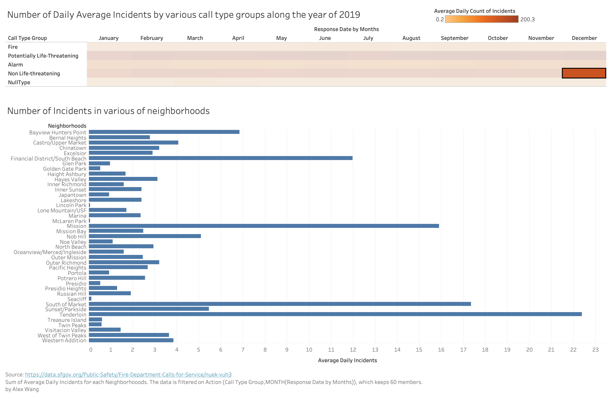
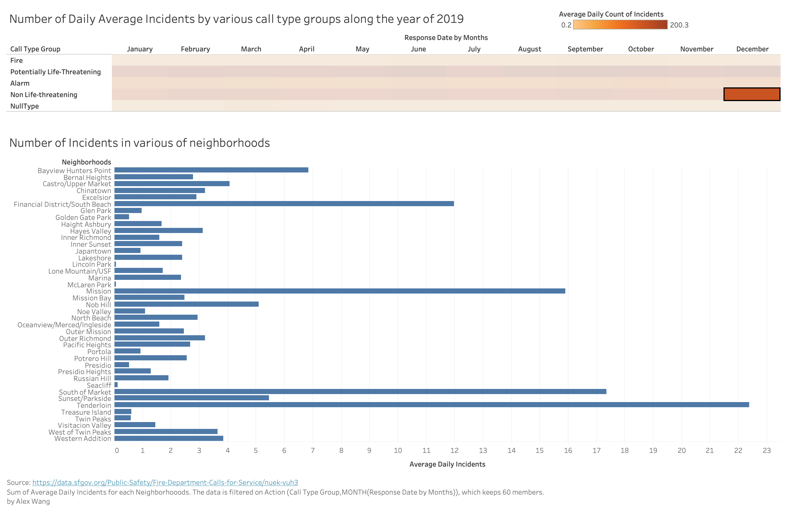

Heatmap + bar chart
by Alex Wang
Data
- Call type group: Call types are divided into four main groups: Fire, Alarm, Potential Life Threatening and Non Life Threatening.
- Response DtTm: Date and time this unit acknowledges the dispatch and records that the unit is en route to the location of the call.
- Neighborhooods - Analysis Boundaries: Neighborhood District associated with this address, boundaries available here: https://data.sfgov.org/d/p5b7-5n3h
- Number of Records: Count of records.
Visualizations
protorype by Tableau

D3 version
Instructions
The color of boxes in heatmap indicates the count of calling records, the x-axis of heatmap is the response date and time of SFFD's action, and y-axis is the call type. In the bar chart, each bar is a neighborhood and length is the count of calls.
Discussion
Firstly, in the heatmap, we could see the comparison between months that how the fire calls distributed, that there is no huge difference of number of calls among months. Also from the y-axis we could see the comparison between different types of calls, such as "potentially life-threatening" has much more number of call than that of other types. Moreover, in the barchart, we could see how are situation of neighborhoods on fire calls.
Planned interactivity
When clicking on specific box on heatmap, the relavent bar chart for that call type at that time for all neighborhoods would show.

 


Connection to the project theme
This visualization explore several situation about works in SFFD. Firstly it shows how different call types take parts in all number of calls, so that we could know what kind of works do the SFFD do. For example, we would know that fire calls is not taking the major part of calls to SFFD. Also it shows the call type distributions along the year, and we could know that the calls to SFFD is not dependent on season or month or certain holidays, etc. Furthremore, if we switch between different data types, the specific number of calls for the same month on neightborhood would be different, so it could be potentially useful for SFFD to deploy different resource near different neighborhood, etc.